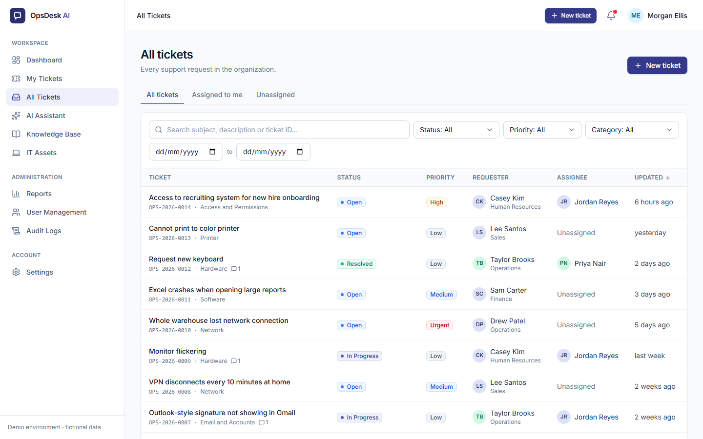
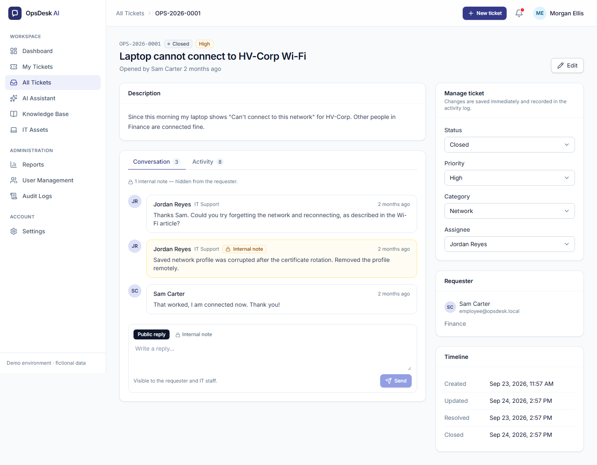
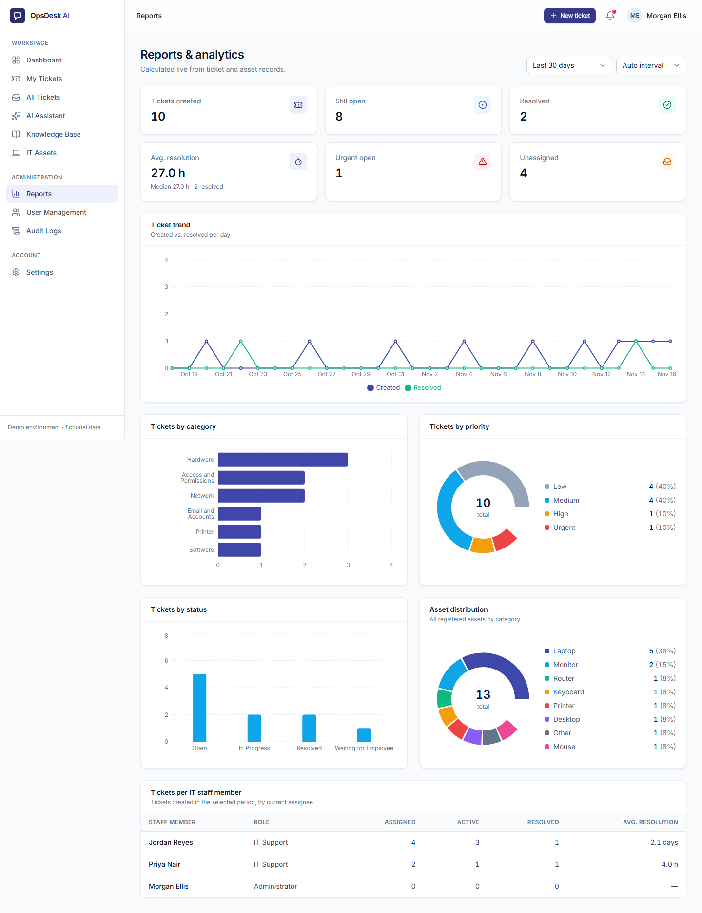
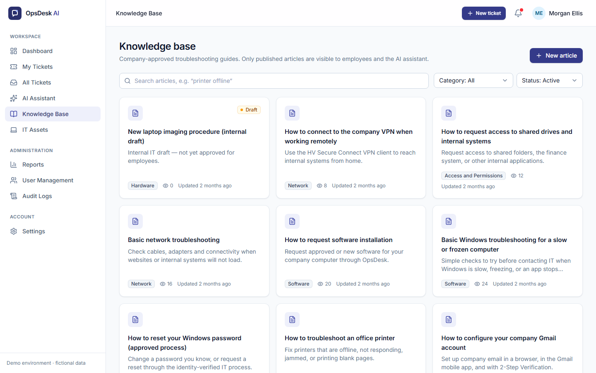

Overview
A help desk where the AI is not allowed to guess.
Small teams rarely have an IT department, so the same questions get asked again and again. OpsDesk AI puts tickets, documentation, hardware records, and an AI assistant in one place, and keeps the assistant tied to what the company has actually written down.
Employees
Submit and track tickets, search help articles, and ask the assistant for troubleshooting steps.
IT support
Work the ticket queue, reply with public or internal notes, maintain documentation, and manage hardware.
Administrators
Manage users, review reports and audit trails, and control the AI and n8n automation settings.
Everyone
Role-specific dashboards and reports computed from SQL, with date filters and bar, line, and donut charts.
Grounded AI
The server decides what the model may cite.
The assistant is built so that a wrong answer is hard to produce and easy to spot.
- PostgreSQL full-text search retrieves only published knowledge base articles.
- The matching articles are sent to Google Gemini through a provider abstraction, with a mock provider for tests.
- The server, not the model, decides which sources are cited, and removes steps that have no supporting article.
- When the knowledge base has no answer, the assistant says so plainly instead of improvising.
- The assistant can draft a ticket from the chat. The employee reviews it before anything is submitted.
Security
Roles enforced in the API, not the UI.
Private by default
Private tickets return 404 to other employees, even when the id is guessed. Internal notes never reach employees.
Sessions and CSRF
Server-side, HTTP-only sessions with synchronizer-token CSRF protection and bcrypt password hashing.
Abuse limits
Rate limiting on sign-in and AI requests, plus Helmet security headers.
Append-only audit log
Database triggers stop audit records from being edited or deleted.
Automation
Notifications that cannot break the ticket system.
Ticket events go through a transactional outbox, so a ticket is saved whether or not n8n is reachable.
Written in the same transaction
Retries with exponential backoff
HMAC signature, idempotent event id
Verifies and routes the event
Notification email
An admin delivery monitor shows failed deliveries and offers a one-click retry.
Testing
Tested in the API, browser and model.
Scope and limits
What this project is, and is not.
- All data is fictional demo data for a made-up company. Demo accounts and passwords are for local development only.
- Without a Gemini API key, the assistant says it is not configured and points to the knowledge base and ticket form instead.
- Retrieval uses PostgreSQL full-text search over published articles, not vector embeddings.
- The API refuses to start in production without secure cookies, and the demo seed refuses to run in production.
Screenshots
The app, captured from the repository.

Answers built only from published articles, with source links.

Filters, status, priority, and assignee.

Public replies and staff-only internal notes.

Charts and tables computed from SQL.

The only source the assistant may cite.

Webhook deliveries with one-click retry.

Ticket list at 390 px.